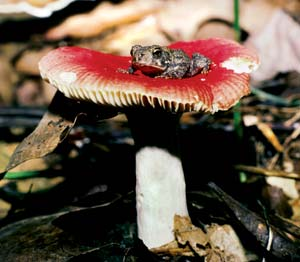
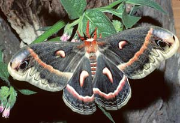
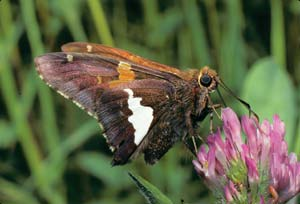
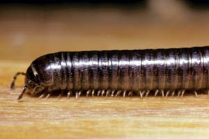
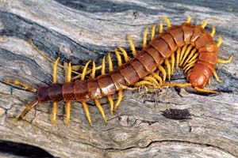
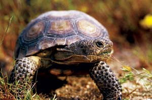
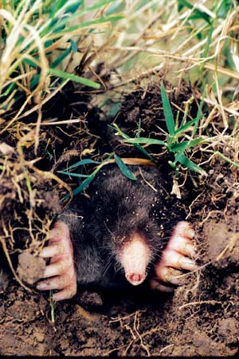
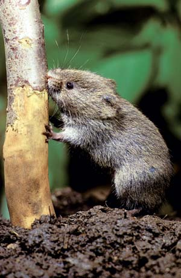

Coming To Terms With Nature Terms
Bug or insect? Fruit or vegetable? Moth or butterfly? Turtle or tortoise? What’s the difference?
By Terry Krautwurst
February/March 2008
It’s not that I’m obsessed with naming things in nature. If anything, I resist the human urge to place labels on all creatures great and small. A rose by any other name does indeed smell as sweet, a butterfly flutters as beautifully and a deer bounds as gracefully - no matter whether it’s a mule deer (Odocoileus hemionus), a white-tailed deer (O. virginianus) or a Grand Kraut deer (Iconfessi madethatoneupus). But even if you leave genus and species hairsplitting to the scientists, there is still plenty of fodder for confusion in everyday nature terminology. It’s easy enough to distinguish a fish from a mammal, but what about a vegetable from a fruit and a ... well, here for your review are common terms that many people (hopefully not just me) confuse or misuse at one time or another.
Moth vs. Butterfly
The essential distinction here is that most moths are fly-by-nights and butterflies are day creatures. Perhaps more accurately, butterflies are light- and warmth-loving creatures. A gray, cloudy day is enough to keep butterflies from taking to the skies.
But a good many moths are day-fliers, too. Beelike sphinx moths dart about in the late afternoon at flowering plants along roadsides and in meadows. In the Southwest, buckmoths flit among the chaparral’s sun-washed vegetation. High in the Colorado Rockies, tiger and owlet moths feed on alpine sunflower.
The major differences between moths and butterflies are physical. Butterflies are sleeker, flashier and more colorful than most moths, which have fat, furry bodies and rely on dull colors and patterns to help them hide during the day, disguised as bird droppings, dead leaves, lichens or tree bark. Also, butterflies at rest hold their wings together upright, like the sail on a sailboat. Moths fold theirs flat, rooflike, against their backs.
Confusing the above rules are skippers - common day-flying butterflies, most of which hold their wings appropriately vertical, or nearly so. But otherwise they are more mothish - their wings dull brown and rust, their bodies plump and fuzzy. Some scientists say skippers aren’t butterflies or moths, but their own something-in-between.
To tell whether an insect is a skipper, a “true” butterfly or a moth, check out its antennae. Skippers have slender antennae that curve back at the end, like a shepherd’s crook. Other butterflies have slender, smooth antennae that are thicker and rounded at the end, like a club. And moths have feathery antennae that taper to a point.
Centipede vs. Millipede
This one’s easy, right? You just count the number of legs. If it has 100 legs, it’s a centipede; if it has 1,000, it’s a millipede. Anybody who knows the metric system knows that.
Fortunately, that’s entirely wrong - and a relief to anyone who’d attempt to count a scurrying centipede’s legs. There are easier ways to distinguish between the two.
Millipedes are placid, easy-going creatures that chug along over the forest floor, their legs moving in fluid, wavelike rhythm. There are two pairs of legs to each body segment, of which there are typically 30 to 40 in North American species. So we’re talking roughly 120 to 160 legs, not 1,000. Millipedes feed on forest leaves and other rotting vegetation. They can’t bite and at the most will curl up into a ball in response to an annoying human.
Centipedes are quick-moving, carnivorous and nocturnal hunters, usually slimmer and longer-legged than most millipedes. The body is flat, not rounded like the millipede’s, and each segment has but one pair of legs.
Common North American centipedes have 15 segments, and thus 30 legs. The front two “legs,” not incidentally, are actually clawed appendages with poison glands used for catching and killing insect prey. Centipedes can bite humans, too, but species in this country rarely do. Large tropical species are another matter. The giant centipede of the West Indies is a foot long and snacks on mice. Annoying humans, beware.
Turtle vs. Tortoise
Turtles are swimmers and live in and around water. Tortoises are strictly land animals that come to water only to bathe or drink. That’s a clear enough distinction, and here’s another: Of the several dozen hard-shelled reptile species in the United States belonging to the turtle/tortoise clan, only three are tortoises, and you won’t find any of them outside the Southeast, the Deep South or the desert Southwest.
Also, tortoises have high, domed shells and move about slowly on stumpy legs and unwebbed feet. They’re mild-mannered and vegetarian. Most turtles have flatter shells and webbed feet, can move quickly on land and in water, and are carnivorous - sometimes aggressively so.
The well-known box turtle has a domed shell and prefers dry land - like the tortoise - but it also has webbed feet and eats both plants and animals (earthworms). So it’s properly called a turtle.
Undoubtedly, part of the confusion over “turtle” and “tortoise” is the English language - not ours, but the one spoken in the United Kingdom. There, only a few species are called “turtles” and the rest are commonly known as “tortoises” or “terrapins.”
Bug vs. Insect
Just about everybody knows there’s a technical distinction between “bug” and “insect,” but what exactly is it? Well, above all it is certainly technical. Even most entomologists are perfectly happy to call almost anything that’s not an octopus and has more legs than your average dog a “bug” in everyday conversation. So in the sense of practical, socially acceptable words for creepy-crawly-flying-jumping things, “bug” is every bit as good as “insect,” and never mind the academics.
Strictly speaking, though, “bug” is not a generic word but a precise biological term. It applies only to the roughly 40,000 members (worldwide) of the insect family Hemiptera, a relative flyspeck on the wall of insects overall, which total in excess of 1 million species. Most but not all true bugs have leathery looking forewings that fold back on the body and become lacy toward the tips, where they overlap. (Hemiptera means “half wing.”) Many also have a telltale triangular pattern on their back, just behind the head. All true bugs have beaklike mouth parts designed for sucking juices from plants or animals. Aphids, water striders, cicadas and stink bugs are real bugs. Most impostors with “bug” in their names - such as ladybugs and lightning bugs - are actually beetles, which have hard forewings that fold straight back without overlapping.
Fruit vs. Vegetable
Here’s another pair of players in the struggle between common-sense usage and scientific accuracy. Most everyone has heard that a tomato is actually a fruit, but of course we all know it’s a vegetable anyway; why else would they put it in vegetable soup?
But it’s not just the tomato that lives publicly as a vegetable when it is in hair-splitting fact a fruit. Botanically, a fruit is the mature ovary of a flowering plant, along with any connected parts. Translated, that means anything with seeds. So eggplant, cucumbers, squash, peas and sweet corn are fruit, too. Nuts are hard, dry fruit.
A vegetable, on the other hand, is any edible herbaceous plant part: stalks (rhubarb, celery), roots (carrot, radish), tubers (potato, yam), buds (Brussels sprouts) or flowers (broccoli, cauliflower). Of course, if you’re speaking practically rather than botanically, a good many fruits (tomatoes, et al.) pass as vegetables, too.
Mushroom vs. Toadstool
A mushroom is the fleshy, aboveground, spore-bearing part of a fungus, most of which grows as stringy filaments underground or in decaying organic matter. There are some 5,000 species of mushrooms in the United States. About 600 are notably edible - ranging from not bad to downright delicious. The vast majority of the others are too tough or bland to bother with. A few hundred are toxic to one degree or another, but not fatally so. A handful of species can kill you.
The term “toadstool” is commonly applied to poisonous mushrooms. It’s a holdover from the days when people believed a mushroom became poisonous when a toad sat under or on it. To serious mushroom hunters, though, the term “toadstool” is an antiquated epithet, more often than not unfairly applied to perfectly well-behaved mushrooms, and a dangerous generalization to boot. There simply is no broad, easily recognized group of harmful, poisonous fungi. The only way to tell an edible from a toxic is to learn the fine art of individual mushroom identification. For starters, get a good field guide (my favorite is Mushrooms of North America by Orson K. Miller Jr.). Best of all, find an experienced mushroomer willing to teach you.
Mole vs. Vole
Their names are confusingly similar, and both kinds of creatures are fuzzy little mammals with bad reputations for dastardly deeds in lawns and gardens - but that’s pretty much where their common characteristics end.
Moles are biological digging machines with velvety-furred, broad-shouldered, cylindrical bodies designed for subterranean tunneling. In most species, the eyes and ears are pinhead-size or not visible at all. You certainly will notice, however, a mole’s fleshy, flexible snout and broad, clawlike forefeet, which it uses like shovels to scoop aside dirt as it forges forward through earth. Alternating four- to five-hour shifts of digging with slightly shorter rest periods, a mole can excavate up to 100 feet of tunnels in a day as it searches for grubs, slugs and earthworms. As insectivores, moles may create unsightly mounded ridges in your lawn, but they have no interest in your plants and actually help aerate your soil.
Voles, on the other hand, are beady-eyed, twitchy-whiskered rodents with insatiable vegetarian appetites. If your flower bulbs and shrub roots are being eaten, or if the bark on young trees is gnawed up to 8 inches above ground, voles are the likely culprits. Resembling mice but with shorter tails, voles - depending on the species - may tunnel underground, travel along pathways pummeled amid dried grasses or leaves, or take the subways already dug by moles.
Ecologically, the most significant difference between moles and voles is their reproductive rate. Mother moles produce one litter of three to five young per year. A female vole, on the other hand, annually bears five to 10 litters of up to nine babies each … all of which can breed within about a month. Voles, the primary plant-to-protein converters in numerous food chains, are the bite-size staple upon which many a predator depends.
|
 BILL BEATTY A toad on a russula species mushroom, a few varieties of which are poisonous. The term “toadstool” is a holdover from the days when people believed a mushroom became poisonous when a toad sat under or on it. |
 BILL BEATTY Cecropia moth |
 DAYBREAK IMAGERY Silver-spotted skipper butterfly |
|
 DWIGHT KUHN Millipedes actually have about 150 legs and are docile herbivores. |
 TOMVEZO.COM Centipedes, which have about 30 legs, are carnivorous hunters. |
 BRUCE WATKINS/ANIMALS ANIMALS Desert tortoise |
 DWIGHT KUHN Eastern box turtle |
 DWIGHT KUHN Can you find the bug in this photo? Despite its name, the ladybug technically isn’t a bug. However, the aphid pests they feed on are technically bugs. |
 MASLOWSKI PRODUCTIONS Eastern mole. Moles and voles have confusingly similar names, and both creatures are fuzzy little mammals with bad reputations for dastardly deeds in lawns and gardens. |
|
 DWIGHT KUHN Meadow vole. Moles and voles have confusingly similar names, and both creatures are fuzzy little mammals with bad reputations for dastardly deeds in lawns and gardens. |
|
|